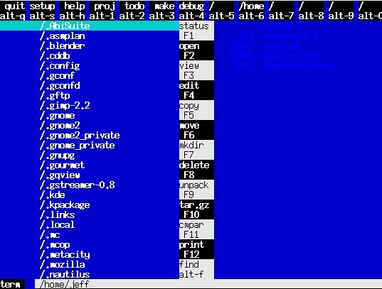
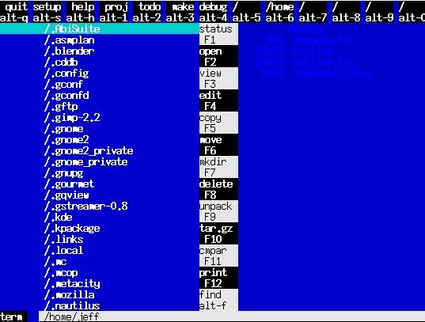

LinuxAsmTools
LinuxAsmTools
If you enjoy assembler, this site will provide tools and reference materials for Linux and X86 terminal/console programs. A companion site http/linuxasmtools.net/x covers X window programming. Most programs found here support the SFF guidelines. Some of the tools available in the download section are:
1. debuggers
2. editors
3. disassebler and source code generator
4. trace debugging tool
5. lots of development utilities
6. three libraries and example programs
All programs are open source
AsmMgr screen

 
